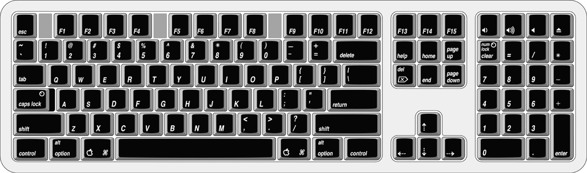

There are localized versions of the Apple Pro Keyboard for use in different parts of the world. The three standards used are ANSI (US and North America), JIS (Japan), and ISO (Europe). Figure 3-4 shows the keyboard layout for the ANSI keyboard.
Figure 3-4 ANSI keyboard layout
